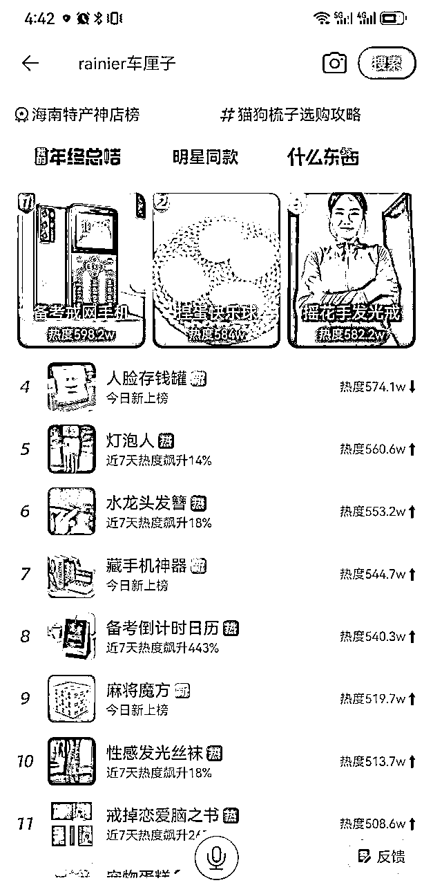

来源：https://kib0lcw2xe.feishu.cn/docx/NgNMdnLj7olH6Rxl4qTcaxeInph
兄弟们好，我是古辛，擅长选品，之前跟大家分享了抖音选品方法心得，呕心沥血写了几千字，结果被一些兄弟吐槽没有干货，很尴尬，所以古辛又写了一篇，我们目前在用的小红书选品方法合集，希望能对大家做小红书有用。
虽然说小红书是种草平台，这个平台也有推荐机制（内容分发机制），但是推荐机制没有抖音那么完美，用刷抖音短视频的方法，在小红书选品，这条路走不通，选品效率很低。
小红书选品，效率比较高的方式，就是用淘宝选品那一套，通过在小红书上，搜索核心关键词来选品。这个核心关键词，最好是和女性的需求强相关，其次是小孩的需求，最好不要做和男性的需求强相关的品。
淘宝的分类页面，有目前国内所有主流搜索电商平台里，最全面的类目，不过和亚马逊比还差了一点，亚马逊的分类词，是古辛见过最丰富的，没有之一。
大家可以从淘宝的分类页面里，去选择适合女性用户的产品词，拿到小红书上去搜索。
选品初期是会比较枯燥和乏味，挨个挨个去目标平台看数据，这一步没法省。
淘宝神店榜是手机淘宝出的一个板块，对于小红书选品来说很好用，这个是经过古辛实测过的。
这套选品方法，能不能用于抖音选品，古辛实操过，不好用。这套选品方法，可以用于淘宝，拼多多，闲鱼等选品。
对于抖音来说，最好用的，还是通过刷抖音短视频来选账号，虽然很多朋友吐槽说，这种方法说了跟没说一样，但确实是目前做抖音，最好用的选品方法，没哟之一。

手机淘宝，点击搜索框之后，底部就会出现一个最近热销产品榜单，这个榜单每个小时都在实时更新，这里面有些品，也适合拿到小红书去做。
这个榜单里的品，都是最近淘宝搜索热度猛增的品，有很高的时效性。
2.4.4 顶部有很多分类选项，点击自己想要的分类，比如“母婴”，就会出现很多母婴用品，我们选择第一个，“宝宝沐浴露好价榜”
这些产品有些和小红书是有一些信息差的，天猫竞争激烈，小红书的竞争可能没有那么激烈。
和搜索相关的东西，5118是离不开的，5118也适合用来选品，但前提是大家要知道“关键词根”，也就是“核心关键词”，不知道核心关键词，拿什么去搜？
关键词根从哪里来？可以从第一种选品方法，淘宝分类页面里面来，如果自己有关键词库的话，就从关键词库里来。
点击搜索，按“移动日检索量排序”，就能看到关于车厘子搜索量高的词，这里的词，也可以用来写小红书，作为小红书的标题，和想要埋入的关键词。